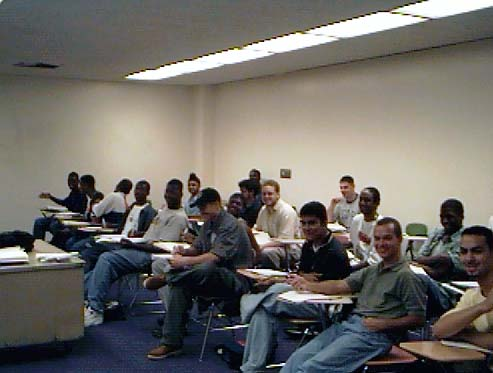

Dr. Cleary's Teaching Page

Fall Semester 2025 Courses:
- Math 213: Calculus III with Planar Vector Analysis
Spring Semester 2025 Courses:
- Math 213: Calculus III with Planar Vector Analysis
- Math 461: Differential Geometry
- Math A6100: Graduate Differential Geometry
Spring Semester 2024 Courses:
- Math 213: Calculus III with Planar Vector Analysis
Fall Semester 2023 Courses:
- Math 213: Calculus III with Planar Vector Analysis
Spring Semester 2023 Courses:
- Math 347: Elements of Modern Algebra
- Math 360: Introduction to Modern Geometry
Fall Semester 2022 Courses:
- Math 213: Calculus III with Vector Analysis
Spring Semester 2022 Courses:
- Math A6100: Graduate Differential Geometry
- Math 461: Differential Geometry
Fall Semester 2021 Courses:
- Math 212: Calculus II with Introduction to Multivariable Functions
Spring Semester 2021 Courses:
- Math 212: Calculus II with Introduction to Multivariable Functions
- Math 360: Introduction to Modern Geometry
Spring Semester 2019 Courses:
- Math 360: Introduction to Modern Geometry
Fall Semester 2018 Courses:
Spring Semester 2018 Courses:
- Math 360: Introduction to Modern Geometry
Fall Semester 2017 Courses:
- Math 392: Vector Analysis and Linear Algebra
Spring Semester 2017 Courses:
- Math A6100, Graduate Differential Geometry